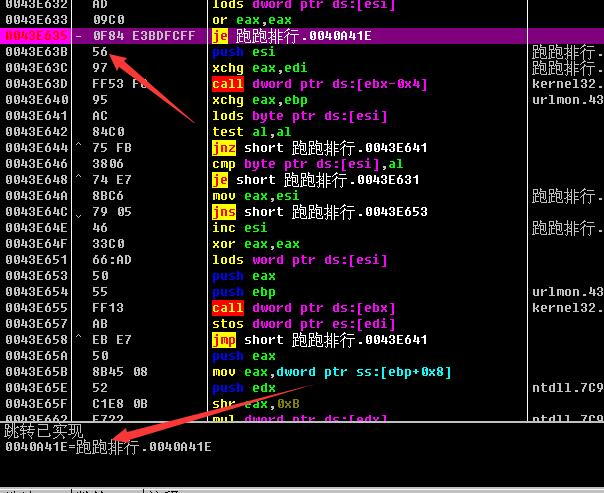

快捷判断找OEP
有的时候我们在脱壳的时候经常其实眼睛观察就能观察到OEP的位置（比较大的一个跨区段跳转），但是这个时候我们的跳转并没有实现，原因有很多，比较典型的原因就是我们的输入表重新构建的工作并没有完成，所以紧跟其后的就是我们的输入表重建工作，比较典型的就是下面这段代码：
我们来看这句，这么多字节，很明显的啊，就是一个跨区段的跳转，但是我们发现这个时候我们并没有跳转实现，我们先转过去，发现确实是OEP，但是我们dump修复的时候我们发现我们发现不了任何一个输入表，这就对了，下面的这一下跳转其实就是我们的输入表重建工作，比较明显的就是我们的我们寄存器中会出现输入表的一些信息：
这个时候我们要注意了：
1 | 0043E633 09C0 or eax,eax ; 跑跑排行.0043E746 |
我们可以看到，只有只有在我们的eax的值为0的时候我们的跳转才会实现，这个时候OD提供给了我们一个很强大的功能就是跳转断点，我们设置只有在eax==0的时候才会停下来就好了，具体操作如下：
键入我们的条件：eax==0
然后我们运行程序：

这个时候我们跟过去就是我们的OEP了。